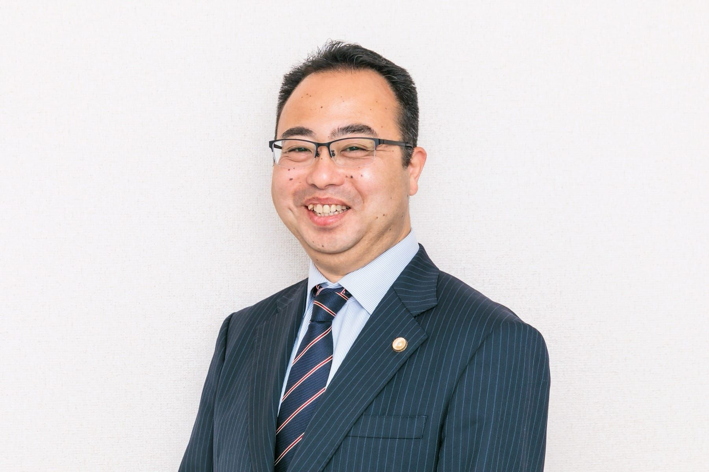
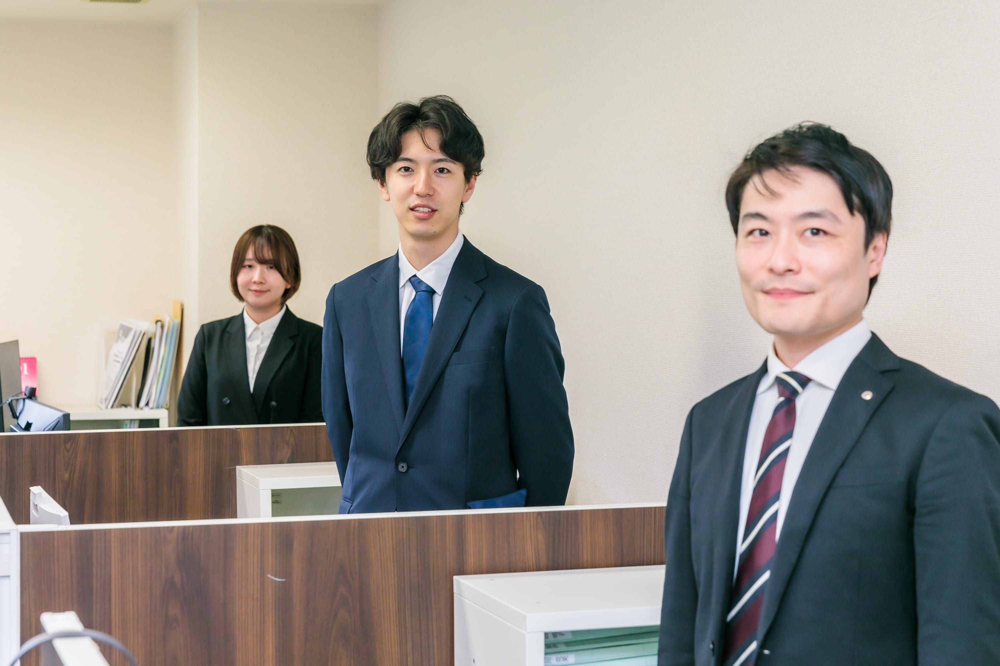
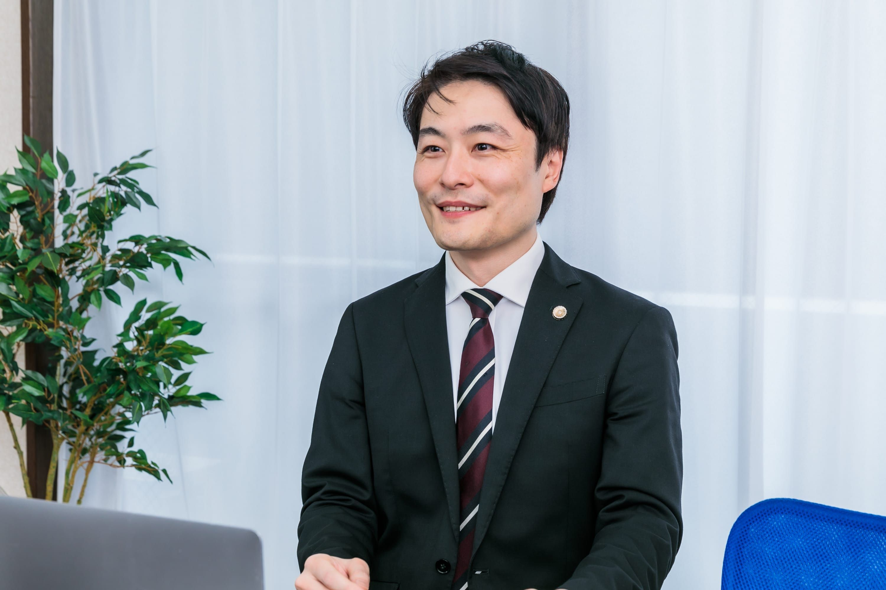
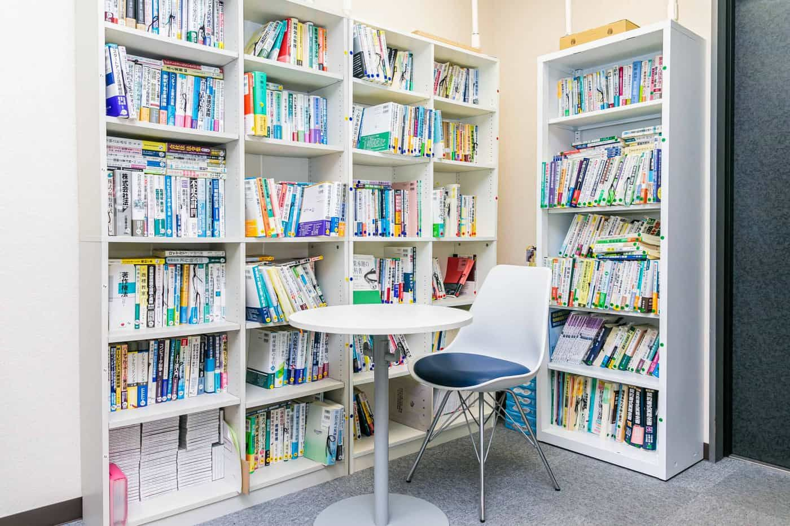
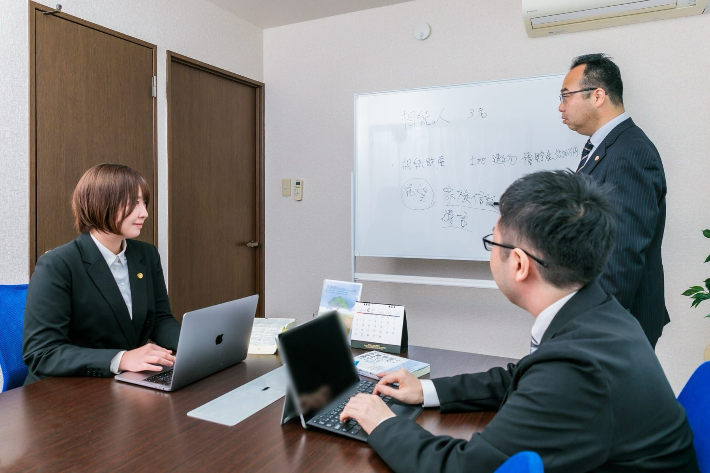
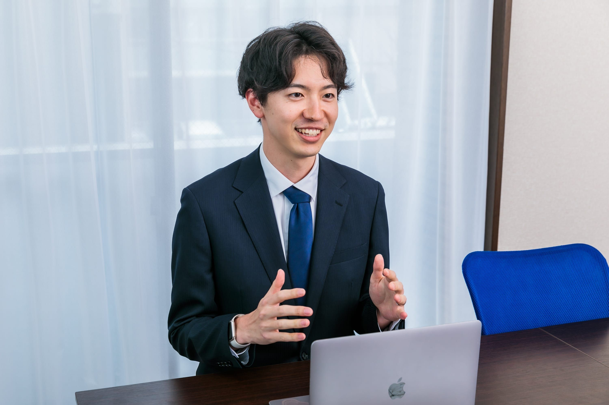
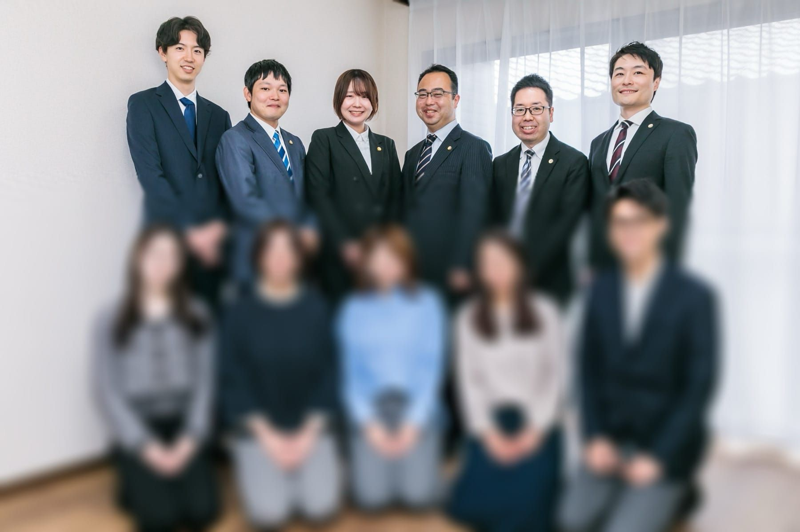

調布・三鷹エリアを拠点に、相続・事業承継・中小企業法務を中心に取り扱う法律事務所です。
現在、弁護士7名体制のもと、案件増加に伴い、新たに弁護士を1名募集しています。
社会課題に向き合いながら、依頼者にとって本当に価値のあるリーガルサービスを提供したい方を歓迎します。
※2026年7月に八王子支店を開設予定です。
事務所訪問・ZOOM説明会
エントリー前に、事務所についてより詳しく知りたいという方に向けて、事務所訪問・ZOOM説明会を実施しています。正式な応募前のカジュアルな面談形式ですので、業務内容や働き方、事務所の雰囲気など、お気軽にご質問ください。
※Googleフォームに遷移します
説明会・事務所訪問を申し込む →2014年の設立以来、調布・三鷹武蔵野の2拠点を軸に地域に根ざした法律サービスを提供しています。
※2026年7月に八王子支店を開設予定です。
事務員 5名
内1名：行政書士＆宅建士有資格者 ／ 内1名：宅建士有資格者


少数精鋭だからこそ生まれる、温かくプロフェッショナルな職場文化があります。



メンバー全員が穏やかな性格で、アットホームな雰囲気で仕事をしております。事務員含め、日々ミーティングを行い、コミュニケーションを大切にしています。分からないことがあれば、先輩後輩の立場に関わらず、気軽に相談できる環境です。また、ランチ会、飲み会など仕事以外の行事も活発に行っています。
原則として毎週、勉強会を開催しており、OJTのみならず、座学でも学習の機会があります。勉強会には外部の弁護士や司法書士も複数名参加しており、事務所外のノウハウも共有できる仕組みを取っております。その他、各弁護士の興味がある分野について、任意参加の勉強会なども開催しています。
当事務所では、税理士・司法書士・社会保険労務士事務所の顧問先がありますが、それ以外にも、多くの税理士事務所・司法書士事務所と提携しており、非常に多くの他士業の先生方と交流があります。日々の業務で協力することはもちろん、事務所の飲み会にも他士業の先生方に参加して頂いています。税務や登記など法務以外の分野を学ぶ機会が豊富にあります。
業務効率化ツールを積極的に導入し、弁護士が法律業務に集中できる環境を整備しています。特に、案件に関する情報は、ITツールを用いてクラウド上で共有・管理しており、進捗状況や対応履歴を円滑に確認できる体制を構築しています。
※ 守秘義務・情報管理に配慮しながら活用しています。
相続・事業承継・企業法務を中核に、幅広い分野の案件を経験できます。
遺言書作成等の生前対策から、遺産分割協議等の紛争案件まで、相続に関わる幅広い業務を担当。
高齢化社会における財産管理・認知症対策として需要が急増している分野。
中小企業の経営者が直面する後継者問題・株式移転・M&Aを総合的にサポート。
契約書作成・審査、新規事業のリーガルチェック、労務問題など企業法務を一手に担当。
売買・賃貸トラブル・明渡請求・境界問題など不動産に関する紛争・予防法務。
医療法人の組織再編・事業譲渡を支援。
後継者不在や業績悪化に悩む事業者の廃業手続き・清算・関係者調整を総合的にサポート。税理士・司法書士と連携して対応します。
※国選の刑事事件を含め、個人事件は原則自由に受任可能です。
3つのビジョンを軸に、弁護士としての本質的な価値を追求しています。
個々の案件解決に留まらず、社会課題の解決に繋がる仕事をしたいという考えを持っています。超高齢社会の日本では解決されるべき課題が山積している状況です。また、社会が変化するとき、そこには課題が生まれます。法律家として培った知識と経験を活かして、社会課題を解決し、より良い社会を作ることを目指します。そのために、調布を中心に積極的に支店を出店し、組織を拡大していく方針です。
弁護士の仕事は依頼がなければ成り立ちません。社会課題を解決するというビジョンを実現するためには、まずは何よりも依頼者の信頼を得る必要があります。世間一般の弁護士に対する満足度は高くない状況にあります。当事務所では、相談者・依頼者がHPを閲覧してから、問い合わせ、法律相談、依頼、そして、案件終了に至るまでのあらゆる場面において、日々業務のあり方を見直し、顧客体験を一新することを目指しています。
左記のようなビジョンを実現するためには、そこで働く弁護士と事務員が活き活きと仕事が出来ることが必要です。働きやすい環境を実現することを目指すため、所員の意見を積極的に取り入れているほか、年末年始、GW等には10日程度の連休を取り、リフレッシュしてもらうようにしています。
経験や専門分野よりも、価値観と姿勢を重視しています。依頼者だけでなく、弁護士、事務局とも協力し、円滑なコミュニケーションができる方を求めています。


当事務所のビジョンに共感し、志を共有できる方を求めています。
当事務所は、新人のうちから裁量を持って動ける環境を大切にしています。その分、「まず自分で考えてみる」姿勢が求められる場面も多くあります。
そのため、大手事務所のような徹底した分業制や、明確なマニュアルのもとで着実に進めるスタイルを希望される方には、少し雰囲気が異なるかもしれません。
一方で、依頼者と近い距離で仕事をしたい方、試行錯誤しながら自分のペースで成長したい方には、働きがいを感じていただける環境だと思います。
裁量があるとはいえ、放任するわけではなく、先輩弁護士、代表弁護士がサポートします。難しい案件や判断に迷う場面では、所内の弁護士一同、一緒に考えます。個人の主体性を伸ばしつつ、チームとして支える体制を構築しています。
実際の活動・メンバー・業務内容をさまざまな角度からご紹介しています。
| 採用予定人数 | 1名 |
|---|---|
| 契約形態 | 業務委託（詳細は面談時にご説明します） |
| 報酬 |
新規登録弁護士：600万円（業績により追加報酬あり） 経験弁護士：委細面談 |
| 営業時間 | 10時〜18時 |
| 休業日 |
日祝日。年末年始・GW・夏季休暇は10日程度の連休。 ※土曜日は月1回の交替制で法律相談を担当して頂きます。代わりに、各自の都合に合わせて平日１日を休みにしています。強制ではありませんので、応相談可能です。 |
| 休暇 | 出産休暇、育児休暇：過去に対象の方がいないため、実績はありませんが、相談に応じる考えです。 |
| 弁護士会費 | 自己負担となります |
| 個人事件 | ※国選の刑事事件を含め、個人事件は原則自由に受任可能です。 |
| 選考方法 |
① 書類送付
→
② 書類審査
→
③ オンライン面接
→
④ 二次面接（事務所）
書類：履歴書（写真付き・書式自由）、成績表（大学・大学院・司法試験）、志望動機 送付先：info@shirato-law.com |
| 応募締切 | 内定者決定次第締め切り |
正式な応募前のカジュアルな面談形式ですので、業務内容や働き方、事務所の雰囲気など、お気軽にご質問ください。事務所訪問またはオンライン（ZOOM）、どちらでも対応可能です。
※Googleフォームに遷移します
説明会・事務所訪問を申し込む →弊所への応募を希望される方は、下記書類を弊所までメール（送付先：info@shirato-law.com）にてご送付ください。